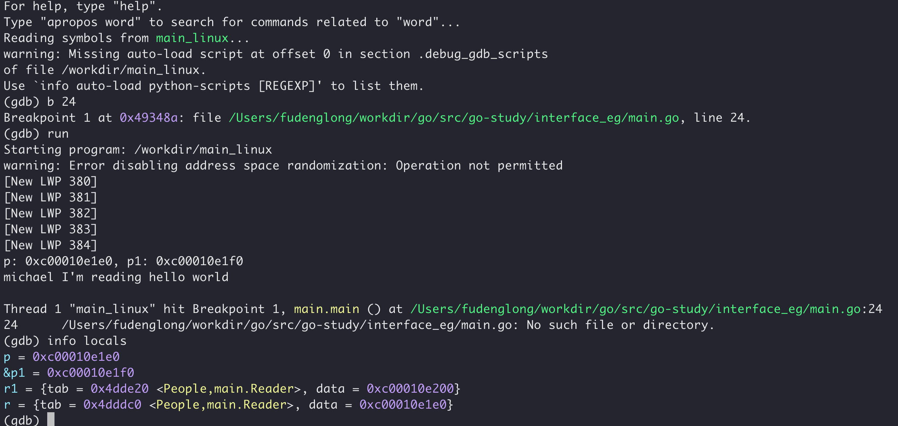
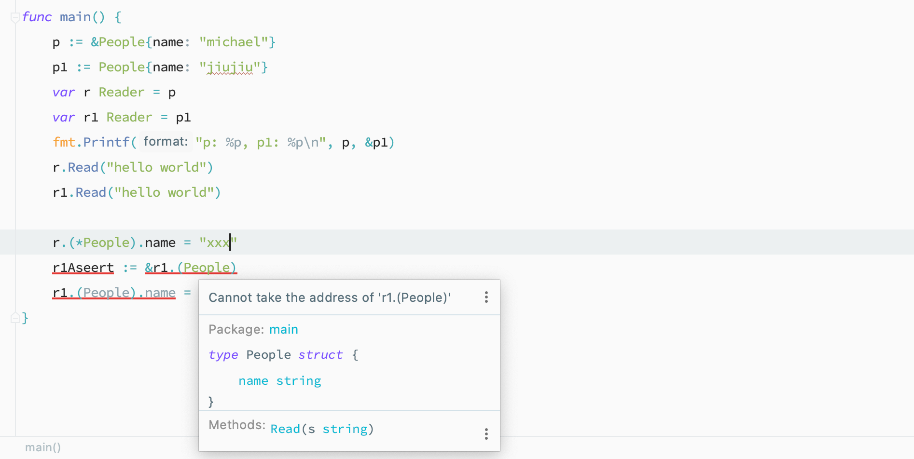
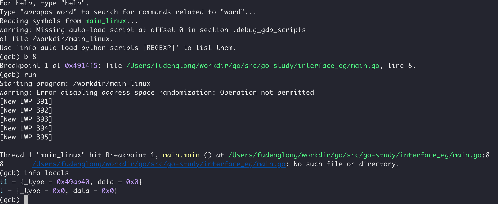

Go 的接口类型实现很简洁，只要目标类型实方法集包含了接口声明的全部方法，就相当于实现了该接口，无需做显示的声明。这种方式导致我们在使用 Go 的接口时，经常是先实现类型，再去抽象出接口。这么设计是相当有好处的，因为在一开始设计出合理的接口是非常不容易的，又或者是在使用第三方库的时候，将所需的功能抽象出接口，即可屏蔽太多不需要关注的内容，也可用于日后功能替换。
Go 的接口从内部实现来看，接口自身也是一种结构体类型，只是编译器会对它做出很多限制：
不能有字段
不能定义自己的方法
只能声明方法，不能实现
可以嵌入其他的接口类型
Go 的结构体定义是在 runtime/runtime2.go 文件中：
1 2 3 4
type iface struct { tab *itab data unsafe.Pointer }
type node struct { data interface { string() string } }
funcTest_anonymous_interface(t *testing.T) { var i interface { string() string } = data{} n := node{ data: i, } println(n.data.string()) }
执行机制
接口是使用一个名为 itab 的结构体存储运行期间所需的相关类型信息：
1 2 3 4 5 6 7 8 9 10 11 12 13 14 15
type iface struct { tab *itab data unsafe.Pointer } type itab struct { inter *interfacetype _type *_type hash uint32// copy of _type.hash. Used for type switches. _ [4]byte fun [1]uintptr// variable sized. fun[0]==0 means _type does not implement inter. } type eface struct { _type *_type data unsafe.Pointer }
funcmain() { p := &People{name: "michael"} p1 := People{name: "jiujiu"} var r Reader = p var r1 Reader = p1 fmt.Printf("p: %p, p1: %p\n", p, &p1) r.Read("hello world") r1.Read("hello world") }
使用如下的命令编译（工作机：MacOS，Mac上调试有问题，编译好之后扔到linux调试）：
GOOS=linux go build -gcflags=”-N -l” -o main_linux main.go
然后复制到我的 Ubuntu 容器中调试：
docker cp ./main_linux 913ecec6c8c3:/workdir/

从结果中我们可以看出，当把值赋值给接口变量时，是会发生值复制的，指针类型变量复制的是地址，非指针类型变量会复制出一个新的对象然后填充到 iface 中的 data 字段。而且，我们甚至无法修改接口存储的非指针类型复制品，因为它是 unaddressable 的，所以想要修改接口存储的值就必须给它赋值一个指针。

还有一个需要注意的是，只有 iface 中 tab 和 data 都为 nil 时，接口才等于 nil。
1 2 3 4 5 6 7 8 9
package main
import"fmt"
funcmain() { var t interface{} = nil var t1 interface{} = (*int)(nil) fmt.Println(t == nil, t1 == nil) }
编译并且使用 GDB 调试结果如下：

而且发现空接口在运行时的表示是 eface 结构体。
反射
前面讲了结构体类型，现在开始学习反射，Go语言为了我们提供了两个入口函数：reflect.ValueOf 和 reflect.TypeOf，这两个反射入口函数，会将任何传入的对象转换为接口类型。在面对类型时，需要区分 Type 和 Kind，前者表示真实类型，后者表示底层基础类型，因为 Go 语言是可以以底层类型为基础，定义新的类型，例如：
1 2 3 4 5 6 7 8 9
type ID int
funcTest_type_and_kind(t *testing.T) { var id ID = 99 typ := reflect.TypeOf(id) t.Log(typ.Name(), typ.Kind()) }
m := make(map[string]int, 0) fmt.Println(reflect.TypeOf(m).Elem()) s := make([]int32, 0, 0) fmt.Println(reflect.TypeOf(s).Elem()) // int *int false // int ptr // true // int // int32 }
funcExample_type_other_methods() { var x X xt := reflect.TypeOf(x) st := reflect.TypeOf((*fmt.Stringer)(nil)).Elem() emptyInterface := reflect.TypeOf((*interface{})(nil)).Elem() fmt.Println("x implements fmt.Stringer", xt.Implements(st)) fmt.Println("x implements interface{}", xt.Implements(emptyInterface))
fmt.Println("x can convert to int", xt.ConvertibleTo(reflect.TypeOf(0))) fmt.Println("x can convert to string", xt.ConvertibleTo(reflect.TypeOf(""))) fmt.Println("x can convert to map[string]string", xt.ConvertibleTo(reflect.TypeOf(reflect.MapOf(reflect.TypeOf(""), reflect.TypeOf("")))))
fmt.Println("x can assign to fmt.Stringer", xt.AssignableTo(st)) fmt.Println("x can assign to int", xt.AssignableTo(reflect.TypeOf(0)))
fmt.Println("x is Comparable", xt.Comparable()) // output: //x implements fmt.Stringer true //x implements interface{} true //x can convert to int true //x can convert to string true //x can convert to map[string]string false //x can assign to fmt.Stringer true //x can assign to int false //x is Comparable true }
Value
和 Type 获取类型信息不同，Value 专注于对象示例的数据读写。在前文提到过，reflect.Type() 和 reflect.Value() 传入对的都是接口变量，而接口变量会复制对象，并且是 unaddressable 的，所以要想修改目标对象，就必须使用指针。
funcExample_canset_unexported_fields() { user := new(User) userValue := reflect.ValueOf(user).Elem() name := userValue.FieldByName("Name") code := userValue.FieldByName("code") fmt.Printf("Name can addr = %t, can set %t\n", name.CanAddr(), name.CanSet()) fmt.Printf("code can addr = %t, can set %t\n", code.CanAddr(), code.CanSet()) if name.CanSet() { name.SetString("michael") } if code.CanAddr() { *(*string)(unsafe.Pointer(code.UnsafeAddr())) = "code" } fmt.Println(user) // output: //Name can addr = true, can set true //code can addr = true, can set false //&{michael code} }
Pointer() 和 UnsafeAddr()
reflect.Value.Pointer() 返回的是该字段存储的指针，目标必须是指针类型；而 reflect.Value.UnsafeAddr() 返回任何可以 CanAddr 的 Value 的地址，返回的是该字段自身地址（结构体地址+偏移量）。例如：
1 2 3 4 5 6 7 8 9 10 11 12 13 14 15 16 17 18 19
type Dog struct { Age *int Name string }
funcExample_pointer_and_unsafePointer() { year := 11 var dog = Dog{Age: &year} dogValue := reflect.ValueOf(&dog).Elem()
age := dogValue.FieldByName("Age") name := dogValue.FieldByName("Name")